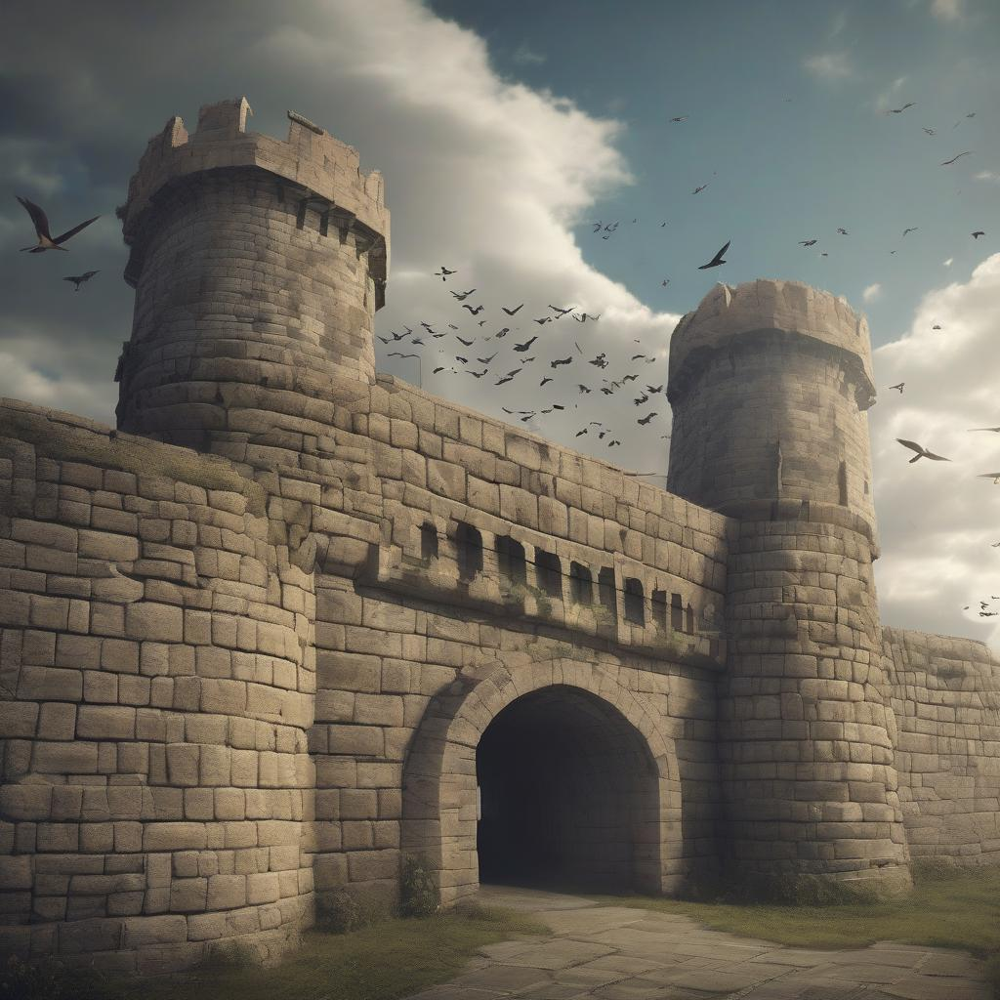

Shinzou wo Sasageyo! 🗡️
Over a century ago, humanity was driven to the brink of extinction by the emergence of massive humanoid creatures known as Titans. These mindless giants devoured humans on sight, forcing the survivors to retreat behind three massive concentric walls.
For 100 years, humanity lived in fragile peace within these walls, until the day the Colossal Titan appeared and breached Wall Maria. That day, humanity received a grim reminder of the terror of living under their rule, and the humiliation of being trapped inside a cage.
The outermost wall, breached in Year 845 by the Colossal and Armored Titans.
The second wall, serving as the middle layer of defense after Maria's fall.
The innermost wall, home to the royal capital and the Military Police Brigade.
"If you win, you live. If you lose, you die. If you don't fight, you can't win!"— Eren Yeager
The Survey Corps (調査兵団 Chōsa Heidan) is the branch of the Military most actively involved in direct Titan combat, Titan study, human expansion, and outside exploration. They have the highest mortality rate, yet attract the bravest soldiers willing to sacrifice everything for humanity's freedom.
Equipped with Omni-Directional Mobility Gear (ODM Gear) and specialized blades, Survey Corps members are trained to fight Titans in three-dimensional space, using their vertical maneuvering equipment to achieve high-speed mobility around their gigantic foes.
The protagonist who vowed to exterminate all Titans after witnessing his mother's death. Possesses the power of the Attack Titan and the Founding Titan.
Eren's adoptive sister and one of humanity's strongest soldiers. Member of the Ackerman clan with exceptional combat abilities.
Eren's childhood friend known for his brilliant strategic mind. Inheritor of the Colossal Titan and key tactician for the Survey Corps.
Humanity's strongest soldier and captain of the Survey Corps Special Operations Squad. Known for his unmatched combat skills and strict discipline.
The 13th Commander of the Survey Corps, known for his brilliant tactical mind and unwavering dedication to discovering the truth about the Titans.
The 14th Commander of the Survey Corps and former squad leader. Passionate Titan researcher with a curious and energetic personality.
"The only thing we're allowed to do is to believe that we won't regret the choice we made."— Levi Ackerman
Attack on Titan (進撃の巨人 Shingeki no Kyojin) is a Japanese dark fantasy manga series written and illustrated by Hajime Isayama. The series began in Kodansha's Bessatsu Shōnen Magazine in September 2009 and concluded in April 2021.
The anime adaptation, produced by Wit Studio (Seasons 1-3) and MAPPA (Season 4), has become one of the most popular anime series worldwide, known for its intense action sequences, complex plot twists, and philosophical themes exploring freedom, duty, and the cycle of hatred.